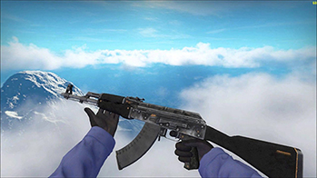
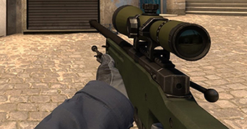
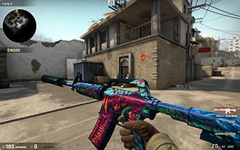
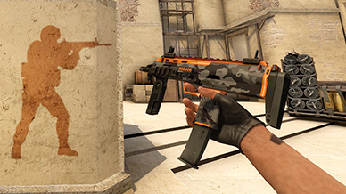
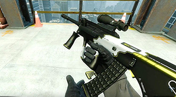
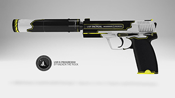
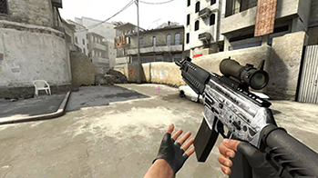
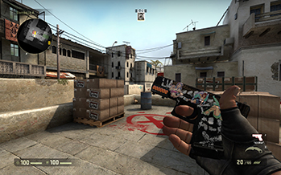

Click nas armas para saber as especificações tecnicas.
Uma das mais poderosas, a AK-47 também é a escolha mais popular entre os Terroristas nas partidas do game. A arma é capaz de detonar inimigos com poucos tiros. O fuzil também não é dos mais baratos, mas compensa os jogadores com seu alto poder de fogo.

O rifle de longo alcance é conhecido por sua precisão e disparos letais, e é considerada a principal ferramenta dos snipers no FPS. Com bom posicionamento e mira, será fácil abater os inimigos sem sequer ser visto. A AWP está entre as três armas mais caras de todo jogo, então tenha cuidado para não perdê-la rapidamente.

A pistola faz sucesso entre os jogadores desde as primeiras versões do game, e se mantém uma das melhores opções em GO. A mais cara da categoria, Desert Eagle justifica o investimento com alto poder de penetração e manuseio ágil. O ponto fraco é o cartucho de apenas sete disparos, que devem ser usados com sabedoria.

A M4A4 não deixa a desejar quando comparada à AK-47. Com pentes de 30 disparos, boa estabilidade e versatilidade, essa é a melhor escolha para os jogadores que dispõem de dinheiro e buscam por uma arma de alta qualidade.

Por $ 1700, a submetralhadora é uma das melhores opções para quem está com orçamento apertado ou no começo das partidas. Com alta taxa de disparos por minuto e bom dano, a MP7 é ideal para espaços reduzidos e combates a curta e média distâncias.

Exclusiva dos Contra-Terroristas, a arma alia disparos rápidos e eficientes a uma mira telescópica capaz de torná-la ainda mais precisa. Apesar do valor alto, o rifle é eficaz nas mais diversas situações, e é constantemente usado no cenário competitivo.

Arma secundária padrão dos contra-terroristas. Tem um bom nível de dano e doze balas, o que é mais do que o suficiente para jogadores habilidosos. Essa é exatamente a pistola SOCOM, famosa por conta de vários jogos, em especial Metal Gear Solid, onde era a primeira arma a ser encontrada (com exceção das granadas).

Tem zoom de 2x, mas com coice menor. Seu poder de fogo é baixo mas é bastante eficaz em médias e longas distâncias. Com um total de quatro cartuchos, são necessários dois a quatro disparos para a eliminação de cada oponente. Exclusiva dos terroristas.

Terrorista, Dano baixo, pistola de início de lado.
